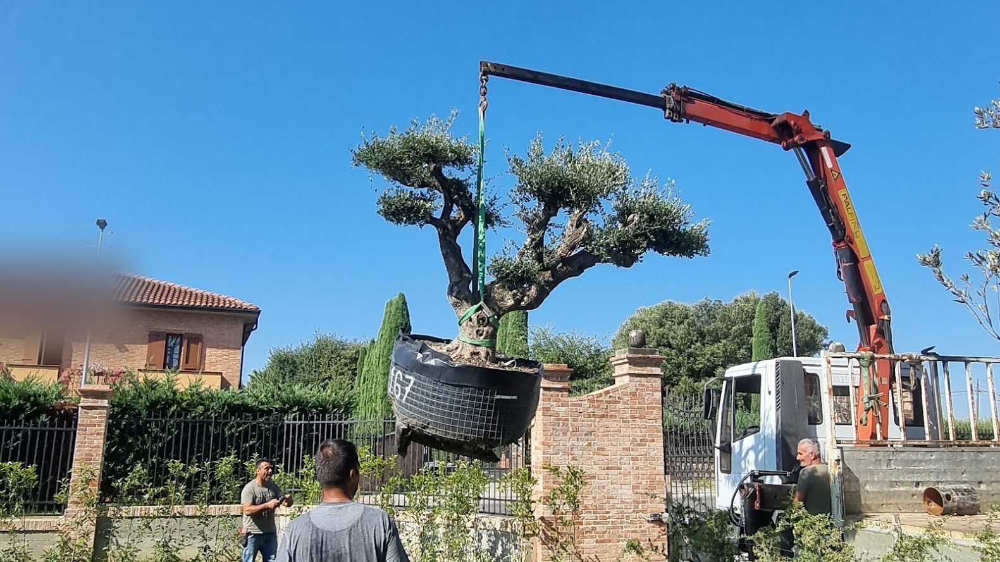

Agrotecnico certificato
Potatura di Olivi e Piante da Frutto tra Perugia e Siena
Esperienza, studio e cura del dettaglio.
Su un frutto si pota anche per la produzione
Su un ornamentale la potatura lavora su struttura, sicurezza e ingombro. Su un olivo e su un albero da frutto entra un obiettivo in più: la produzione. Cambia cosa si toglie e cosa si tiene.
Il frutto nasce su legno di un'età precisa, diversa da specie a specie. Chi pota deve riconoscerlo e rinnovarlo, altrimenti la pianta continua a spostare la produzione sempre più in alto e sempre più in fuori. Serve anche far entrare luce e aria dentro la chioma: un centro chiuso resta improduttivo e trattiene umidità, che è la condizione in cui i problemi partono.
C'è poi un vincolo pratico che su un ornamentale non esiste. L'altezza deve restare raggiungibile: una pianta che si allunga oltre il punto in cui la si raccoglie diventa un problema ogni anno, non solo l'anno in cui si pota.
Per il resto valgono i criteri di sempre, gli stessi delle potature di alberi e siepi: diametri di taglio contenuti, nessuna riduzione indiscriminata, nessun taglio che la pianta non possa chiudere.

Calendario dell'olivo
Quando si interviene, e perché fuori stagione la pianta paga

Prima e dopo la finestra
Prima di allora si espongono tagli freschi al freddo; molto dopo si toglie legno su cui la pianta ha già investito energia, e la reazione arriva sotto forma di ricacci disordinati.
Sugli alberi da frutto la finestra si sdoppia. Il grosso del lavoro si fa a pianta spoglia, quando la struttura è leggibile e si decide quale legno rinnovare.
Il secondo passaggio
Poi c'è un secondo passaggio a vegetazione avviata, molto più leggero: si tolgono i germogli che chiudono il centro e si indirizza quello che sta crescendo, senza aprire ferite grandi. È il passaggio che si salta più spesso, ed è quello che tiene la pianta in forma fra una potatura invernale e l'altra.
Una pianta lasciata indietro: due strade
Una pianta lasciata indietro per anni si rimette in forma, ma la strada non è una sola.
Riforma in una volta
La prima è la riforma in un intervento solo: si riporta subito la pianta alla struttura voluta. È rapida e il risultato si vede in giornata, ma su un olivo o su un frutto abbandonato significa asportare in una volta una quota alta di chioma. La pianta risponde con una massa di ricacci verticali che l'anno dopo va rimessa a posto, e nel frattempo la produzione si ferma.
- Risultato immediato
- Ricacci verticali da rimettere a posto
- Produzione ferma
Recupero per gradi
La seconda è il recupero per gradi: ogni stagione si toglie quanto la pianta può sostenere, partendo da legno secco, polloni e rami che si incrociano, e il centro si apre un po' per volta. Servono più passaggi, ma la pianta resta in equilibrio e ogni anno si lavora su una situazione migliore della precedente.
- Più passaggi nel tempo
- Pianta sempre in equilibrio
- Ogni anno si parte meglio
Si sceglie in base a quanto legno vivo ha la pianta e a quanto può permettersi di perdere, non in base a quanto si ha fretta.
FAQ
Domande su olivi e piante da frutto
I polloni alla base dell'olivo vanno tolti sempre?
Quasi sempre sì, e conviene farlo quando sono ancora sottili. Partono dalla base o dal ceppo, prendono energia e non portano frutto.
L'eccezione c'è quando la pianta è danneggiata o va rinnovata dal basso: in quel caso uno o due polloni ben posizionati diventano la struttura futura e si tengono di proposito. È una scelta che si fa guardando quella pianta, non una regola da applicare sempre allo stesso modo.
Un olivo che produce poco può migliorare con la potatura?
Può, ma la potatura non è la risposta a ogni calo di produzione. Un centro chiuso, troppo legno vecchio e una chioma cresciuta in altezza sono cause su cui il taglio incide davvero.
Quando invece il problema sta nel terreno, nell'acqua o in un parassita, aprire la chioma non cambia il risultato e sposta soltanto l'attenzione. Per questo prima si guarda la pianta intera e quello che le sta intorno, poi si decide se il lavoro è di potatura o di altro.
Melo, pero e susino si potano allo stesso modo?
No. Cambia dove nasce il frutto e quanto legno va rinnovato: pomacee come melo e pero portano la produzione su formazioni che durano più stagioni, mentre le drupacee tendono a spostarla in fretta verso l'esterno.
Cambia anche la tolleranza ai tagli grossi e il momento in cui conviene farli. È il motivo per cui la stessa forbice usata allo stesso modo su due piante vicine dà due risultati diversi: prima si riconosce la specie e come è stata tenuta finora.